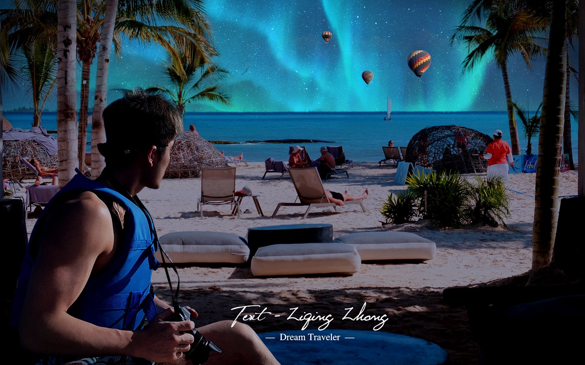

Concept
Ziqing Zhong | Dream Traveler imagines a travel world where a tropical coast, aurora lights, and hot-air balloons can exist together in one cinematic landscape.
Raster Image Exercise
This surreal travel composition combines personal travel photography with a northern-lights sky, hot-air balloons, atmospheric lighting, and layered color adjustments. The goal was to create an imaginative but visually cohesive world.

Ziqing Zhong | Dream Traveler imagines a travel world where a tropical coast, aurora lights, and hot-air balloons can exist together in one cinematic landscape.